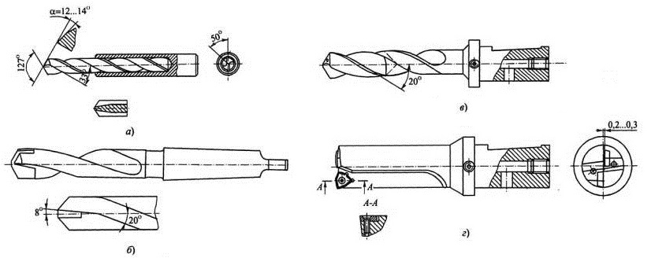

Несмотря на то, что использование твердых сплавов обеспечивает двух-, четырехкратное повышение производительности, удельный вес твердосплавных сверл в общем объеме их применения составляет не более 10 %. Это объясняется неблагоприятными условиями работы твердых сплавов при сверлении: нежестким (консольным) креплением сверл; большими осевыми нагрузками; переменной величиной скорости резания, уменьшающейся до нуля на поперечной режущей кромке; большой шириной срезаемой стружки; опасностью появления вибраций и пакетирования стружки в канавках сверла; малыми числами оборотов и недостаточными мощностью, жесткостью и точностью сверлильных станков.
Более широкое распространение твердосплавные сверла получили при сверлении чугунов, цветных металлов и неметаллических материалов (мрамор, кирпич, пластмассы и т.п.). При сверлении сталей часто наблюдается выкрашивание режущих кромок, особенно в виде разрушения поперечной режущей кромки.
Повышение жесткости сверл, использование внутреннего напорного охлаждения и другие усовершенствования позволяют получать хорошие результаты при сверлении труднообрабатываемых сталей и сплавов, т.е. там, где быстрорежущие сверла имеют очень низкую стойкость.
Для оснащения сверл используют твердые сплавы марок ВК8, ВК10-М, ВК15-М, обладающие наибольшей прочностью. Повышение прочности и жесткости сверл обеспечивают за счет максимально возможного сокращения длины рабочей части инструмента, хотя при этом приходится сокращать запас на переточку. С этой же целью увеличивают диаметр сердцевины сверл до d0 = (0,25...0,35)d и выполняют подточку поперечной режущей кромки.
Мелкоразмерные сверла (d = 2...6 мм) изготавливают цельными твердосплавными или составными, когда хвостовик изготавливается из стали (а), а рабочая часть - из твердого сплава. Сверла d = 10...30 мм оснащают напайными пластинами или коронками из твердого сплава (б, в). При этом корпус сверла изготавливается из стали 9ХС или Р6М5. На корпусах таких сверл направляющие ленточки обычно не делают, так как при высоких скоростях резания, допускаемых твердым сплавом, они быстро выходят из строя и не выполняют роли направляющих сверла.
Обратная конусность предусматривается только на твердосплавной режущей части с созданием вспомогательных углов в планер = 25...30'. Диаметр корпуса сверла занижается на 0,2...0,3 мм по сравнению с диаметром конца твердосплавной части.
Геометрические параметры режущей части: угол при вершине 2φ = 120...140°, угол наклона стружечных канавок ω = 0...200, заточка двух- или трехплоскостная с задним углом на главных режущих кромках α = 7...9°. Передний угол на твердосплавных пластинах γ = 8°, а на коронках с винтовыми канавками переменный, как у быстрорежущих сверл, зависящий от угла ω. Хвостовик конический или чаще всего цилиндрический, как более технологичный.
Для снижения осевого усилия применяется подточка поперечной режущей кромки с сокращением ее длины до (0,10...0,15)d. Так как место пайки пластины и коронки расположено близко от зоны резания, то иногда в процессе сверления наблюдаются случаи отпаивания и разрушения твердосплавной части. Этого можно избежать, если использовать подачу СОЖ через внутренние каналы в корпусе сверла, так как СОЖ снижает температуру резания, интенсивность износа режущих кромок и обеспечивает надежный вывод стружки из отверстия. Такие сверла можно с успехом использовать даже при сверлении труднообрабатываемых сталей.
Наибольшую надежность имеют сверла с напайными твердосплавными коронками и каналами для внутреннего подвода СОЖ, выпускаемые рядом зарубежных фирм. В этом случае длина коронок принимается равной (1...2)d, угол при вершине 2φ = 140°, угол наклона винтовых канавок ω = 20°, заточка двух- или трехплоскостная с подточкой поперечной режущей кромки, хвостовик цилиндрический с допуском по h6 и лыской для крепления винтом в специальном патроне.
В последние годы широкое применение нашли сверла, оснащенные неперетачиваемыми пластинами с механическим креплением на корпусе (г). Они используются для сверления отверстий глубиной L = (3...4)d и диаметром d = 20...60 мм. При этом для повышения надежности сверл в их корпусах выполнены отверстия для подвода СОЖ в зону резания. Стружечные канавки чаще всего делают прямыми, как более технологичные. У сверл небольших диаметров стружечные канавки могут быть и винтовыми с углом наклона ω = 20°.
Применяемые в сверлах твердосплавные СМП позитивного типа с α > 0 в форме параллелограмма, ромба, прямоугольника или неправильного треугольника с шестью режущими кромками и центральным отверстием конической формы для крепления винтом. Вдоль режущих кромок на пластинках при прессовании делают уступы или мелкие сферические лунки, обеспечивающие надежное дробление стружки. Пластины располагаются с обеих сторон относительно оси сверла таким образом, что делят припуск по ширине с перекрытием в средней части. Одна из пластин обрабатывает центральную часть отверстия, а другая - периферийную. Поперечная режущая кромка у таких сверл отсутствует, а хвостовик делается цилиндрическим даже у сверл больших диаметров.